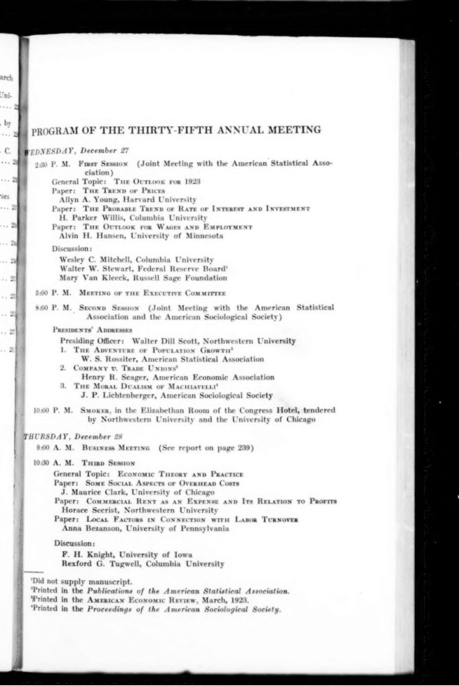

J. M. Clark, 1922: por que a ociosidade é desperdício
Leitura: 8 min
Clark mostra que o custo depende da alternativa: numa depressão, produzir com fábricas e trabalhadores parados custa quase nada à sociedade, e são os contratos que fazem parecer o contrário.


John Maurice Clark, da University of Chicago, construiu o texto sobre um exemplo simples. Se a questão é fazer automóveis ou máquinas de costura, o que se ganha numa ocupação é custo da outra, e o custo do trabalho pode ser representado pelo salário corrente. Mas se a questão é fazer automóveis ou ficar parado, o custo diferencial do trabalho é praticamente zero. Essa característica, avisou, era a chave do argumento.
O texto foi lido em Chicago na terceira sessão da reunião anual, na manhã de 28 de dezembro de 1922, sob o tema “teoria e prática econômica”, ao lado dos trabalhos de Horace Secrist e Anna Bezanson, com Frank H. Knight e Rexford G. Tugwell como debatedores. O subtítulo anuncia uma aplicação do custo fixo à contabilidade social, com referência especial ao ciclo de negócios. A ferramenta básica é cancelar os pagamentos entre indústrias e ver os custos como se toda a indústria fosse operada por uma só empresa.
O que é custo diferencial?
Custo diferencial é a diferença inteira de custos que resulta de uma dada diferença de produção. O que sobra do custo total do negócio Clark chama de “custo residual”, a forma mais fundamental do custo fixo e a mais difícil de medir. Onde há custos residuais, diz, há capacidade ociosa em algum lugar, talvez não na fábrica, mas no trabalho que a opera.
O custo diferencial depende tanto de uma alternativa quanto da outra: aumentar a produção, mudar de produto e manter a fábrica funcionando em vez de fechá-la têm custos diferentes. E, como cancela os itens comuns às duas situações, dispensa medi-los. Por isso permite dizer algumas coisas, “pouquíssimas”, nas palavras de Clark, sobre os custos humanos últimos da indústria: ninguém os mede, mas é possível afirmar que, em certas circunstâncias, são constantes.
Por que a ferrovia gosta de carga extra?
As ferrovias ilustram a primeira tese. O tráfego de cargas tem pico em outubro e mínimo por volta de janeiro; no resto do ano sobra capacidade. Comparando os números mensais da Interstate Commerce Commission, Clark concluiu que, nas flutuações mensais, cerca de metade das despesas operacionais, e praticamente todos os encargos de capital, independem do tráfego. Na tendência anual a economia é bem menor, porque o crescimento exige mais capacidade.
Daí o hábito dos ferroviários de ver todo negócio adicional como ganho. Mas, se o tráfego extra não ficar na baixa temporada, o pico de outubro exigirá mais equipamento e a economia sumirá. Tarifas sazonais para o carvão poderiam melhorar o uso da capacidade e poupar ampliações.
A segunda tese manda usar a capacidade ociosa. O dilema é que os custos fixos precisam ser cobertos, ou a concorrência degeneraria em guerra de preços. Mas há outros caminhos além de cortar preços: produzir para estoque, programar trabalhos adiáveis, vender com esforço especial, acrescentar linhas secundárias.
Para onde vão os custos fixos?
A terceira tese, a mais importante para Clark, trata da transferência e conversão dos custos fixos. Quem os tem e vende um produto os embute no preço, e eles viram custo variável para o comprador: o aço custa tanto por tonelada, mas o custo de produzi-lo pode ser em boa parte constante. Por isso haveria muito mais custo fixo na economia do que parece. A companhia telefônica que cobra por chamada converte custos constantes em cobrança variável; o seguro faz o inverso, e os acidentes deixam de custar ao indivíduo o que custam à sociedade.
Numa depressão, acrescenta, a contabilidade financeira distorce até o custo das matérias-primas, medido por preços futuros mais altos, embora as pessoas precisem mais de bens justamente nessa hora, sobretudo os desempregados.
O trabalho é custo variável?
A formação de um profissional é um investimento, e sua remuneração, um tipo de custo fixo. Clark estende o princípio ao trabalho comum, que também exige investimento e manutenção, e essa manutenção não é muito maior quando o homem trabalha do que quando está parado. Os desempregados vivem com poucos centavos por dia, mas esses centavos não medem o que a sociedade perde; para um indivíduo saudável, o “custo psíquico” de um emprego tolerável é negativo diante da ociosidade.
“parece ser quase uma questão de acaso que os custos do capital sejam vistos como constantes e os do trabalho como variáveis” (it appears to be almost a matter of accident that capital costs are regarded as constant and labor costs as variable)
Tudo depende de como os contratos são redigidos, diz a quarta tese. O trabalho poderia ser pago como salário fixo, como o dos dirigentes, e o capital arrendado por quantia proporcional ao uso, como já faziam a United Shoe Machinery Company e a Dick Mimeograph Company, “nem sempre com satisfação universal”. A proporção de custo constante nas contas seria opcional, alterável por contrato ou por ação pública.
Por que a depressão é um desperdício?
A quinta tese aplica tudo isso ao ciclo. Numa depressão, a maior parte dos custos da indústria é constante, e à comunidade conviria continuar produzindo, ainda que o produto valesse pouco acima das matérias-primas. Mas cada empresa precisa cobrir os custos variáveis, que incluem os custos fixos dos outros. Para dar certo, todos, do produtor de matéria-prima ao trabalhador, teriam de vender pelo custo diferencial ao mesmo tempo; quem age sozinho carrega um ônus pesado e recebe parte mínima do benefício.
A comparação é com os bancos num pânico, que suspendiam os pagamentos em espécie para proteger reservas cuja única função era mantê-los. Foi preciso uma organização cooperativa para liberar as reservas, e seria preciso, na indústria, algo ao menos tão eficaz quanto o sistema do Federal Reserve.
“Do ponto de vista social, isso é uma falácia; uma ficção pecuniária.” (Socially speaking, this is a fallacy; a pecuniary fiction.)
Como socializar os custos fixos?
Passando pela sexta tese sem desenvolvê-la, Clark chega à sétima: repartir os custos fixos como exige a eficiência da comunidade, não como mandam os contratos habituais. Uma linha seria convertê-los em encargos do empregador, como o seguro obrigatório de acidentes, que reduziu muito o número de acidentes. Toda empresa ajuda a criar agitação industrial, congestionamento e desemprego; se não ajuda a carregar esses ônus, não paga seus custos completos.
O trabalho, por sua vez, poderia vender seus serviços por uma remuneração fixa substancial mais uma parte proporcional ao trabalho feito, à maneira da tarifa de prontidão da eletricidade. Obrigar o empregador a pagar todo o custo fixo do trabalho não seria sensato, porque o incentivo a trabalhar precisa ser preservado.
O medo da demissão, observa, só estimula quando a demanda já caiu; nos tempos ativos, convida a “cuidar do emprego”, esticando o serviço. Outra saída seria cobrar das indústrias o custo do auxílio-desemprego conforme algum índice de sua responsabilidade pelo emprego irregular. Clark resume tudo numa frase.
“ociosidade é desperdício, e qualquer coisa que o trabalho ocioso possa fazer é melhor que nada” (idleness is waste and that anything idle labor can do is better than nothing)
O argumento seria supérfluo, conclui, se a economia e os negócios não julgassem os bens pela despesa financeira sob os contratos existentes; uma vez começado esse cálculo, era preciso levá-lo até mostrar que ele não discorda do bom senso.
Na minha leitura
Na minha leitura, o texto trata o custo como relação entre alternativas, e não como dado contábil. Ao trocar a alternativa, de outro emprego para a ociosidade, o custo do trabalho passa de salário corrente a quase nada, e a discussão sobre a depressão se desloca de quem merece o quê para o que de fato se perde.
O texto mostra ainda a tensão entre o cálculo da empresa e o da comunidade: cada empresa tem razões para cortar a produção, e o conjunto dos cortes dá um resultado que nenhuma deseja. As propostas mudam contratos e encargos para aproximar os dois cálculos. Na discussão, Knight aceitou o argumento e o ligou à teoria do custo alternativo.
Glossário
- Custo diferencial
- diferença de custo entre duas alternativas; os itens comuns às duas se cancelam.
- Custo fixo (overhead)
- custo que não varia com o volume produzido no período considerado; Clark chama sua forma mais fundamental de custo residual.
- Fora do pico (off-peak)
- negócio feito na baixa temporada, quando há capacidade ociosa.
- Tarifa de prontidão (readiness to serve)
- cobrança fixa pelo direito de usar um serviço, somada a uma cobrança pelo uso efetivo.
- Contabilidade social
- cálculo dos custos do ponto de vista da comunidade inteira, cancelando os pagamentos entre empresas.
Fontes
- Some Social Aspects of Overhead Costs — John Maurice Clark (University of Chicago) (pp. 50–59). Internet Archive (número completo, PDF)
- Edição completa, com os demais artigos: Nº 181 do Arquivo.
Documento em domínio público (EUA, publicado antes de 1931), via JSTOR Early Journal Content e Internet Archive. Resumo e comentário do autor deste site, sem afiliação com a American Economic Association. Encontrou um erro? Escreva: a correção é publicada no próprio texto, com data.
← Hansen, 1922: salários altos contra pleno emprego ↑ Nº 181 · Chicago, 1922: prever 1923, medir custos e discutir o salário Secrist, 1922: o aluguel comercial e o lucro das lojas de roupas →